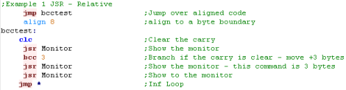
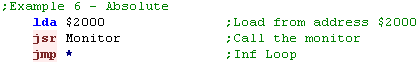

| return to ChibiAkumas.com | Choose a Color Scheme: | Dark |
| Print Mode |
Learn Assembly for the Greatest
Classic Processors: Z80
- 6502 - 68000
Visit www.ChibiAkumas.com
to get my games and their source code! | Support me on patreon
| Don't like to read? you can learn while
you watch and listen instead! Every Lesson in this series has a matching YOUTUBE video... with commentary and practical examples Visit the authors Youtube channel, or Click the icons to the right when you see them to watch the Lessons video! |
| If
you
want to learn 6502 get the Cheatsheet!
it has all the 6502 commands, it also covers the extra
commands used by the 65c02 and PC-Engine HuC6280 |
 |
 |
We'll be
using the excellent VASM for our assembly in these
tutorials... VASM is an assembler which supports Z80, 6502,
68000, ARM and many more, and also supports multiple syntax
schemes... You can get the source and documentation for VASM from the official website HERE |
Table of Contents
Numbers in assembly
The 6502
Beginners Series - lets learn the basic 6502 commands by example!
Platform Specific Series - Now we know the basics, lets look at the details of the platforms we're covering!
Platforms Covered in these tutorials:
Atari 800 and 5200
Atari Lynx
BBC B
Commodore 64
Super Nintendo (SNES)
Nintendo Entertainment System / Famicom
PC Engine
Vic 20
Recommended PDF resources:
6502 CPU Manual
6502 Getting started
6502 Tricks
What is the 6502 and what are 8 'bits' You can skip this if you know about binary and Hex (This is a copy of the same section in the Z80 tutorial)
The 6502 is an 8-Bit processor with a 16 bit Address bus!
What's 8 bit... well, one 'Bit' can be 1 or 0
four bits make a Nibble (0-15)
two nibbles (8 bits) make a byte (0-255)
two bytes (16 bits) make a word (0-65535)
And what is 65535? well that's 64 kilobytes ... in computers 'Kilo' is 1024, because binary works in powers of 2, and 2^10 is 1024
64 kilobytes is the amount of memory a basic 8-bit system can access
6502 is 8 bit so it's best at numbers less than 256... it can do numbers up to 65535 too more slowly... and really big numbers will be much harder to do! - we can design our game round small numbers so these limits aren't a problem.
| You
probably think 64 kilobytes doesn't sound much when a small
game now takes 8 gigabytes, but that's 'cos modern games are
sloppy, inefficient, fat and lazy - like the basement
dwelling losers who wrote them!!! 6502 code is small, fast, and super efficient - with ASM you can do things in 1k that will amaze you! |
Numbers in Assembly can be represented in different ways.
A 'Nibble' (half a byte) can be represented as Binary (0000-1111) , Decimal (0-15) or Hexadecimal (0-F)... unfortunately, you'll need to learn all three for programming!
Also a letter can be a number... Capital 'A' is stored in the computer as number 65!
Think of Hexadecimal as being the number system invented by someone wit h 15 fingers, ABCDEF are just numbers above 9!
Decimal is just the same, it only has 1 and 0.
In this guide, Binary will shown with a % symbol... eg %11001100 ... hexadecimal will be shown with $ eg.. $FF.
| Assemblers will
use a symbol to denote a hexadecimal number, in 6502
programming $ is typically used to denote hex, and # is used
to tell the assembler to tell the assembler something is a
number (rather than an address), so $# is used to tell the
assembler a value is a Hex number In this tutorial VASM will be used for all assembly, if you use something else, your syntax may be different! |
 |
| Decimal | 0 | 1 | 2 | 3 | 4 | 5 | 6 | 7 | 8 | 9 | 10 | 11 | 12 | 13 | 14 | 15 | ... | 255 |
| Binary | 0000 | 0001 | 0010 | 0011 | 0100 | 0101 | 0110 | 0111 | 1000 | 1001 | 1010 | 1011 | 1100 | 1101 | 1110 | 1111 | 11111111 | |
| Hexadecimal | 0 | 1 | 2 | 3 | 4 | 5 | 6 | 7 | 8 | 9 | A | B | C | D | E | F | FF |
Another way to think of binary is think what each digit is 'Worth' ... each digit in a number has it's own value... lets take a look at %11001100 in detail and add up it's total
| Bit position | 7 | 6 | 5 | 4 | 3 | 2 | 1 | 0 |
| Digit Value (D) | 128 | 64 | 32 | 16 | 8 | 4 | 2 | 1 |
| Our number (N) | 1 | 1 | 0 | 0 | 1 | 1 | 0 | 0 |
| D x N | 128 | 64 | 0 | 0 | 8 | 4 | 0 | 0 |
| 128+64+8+4= 204 So %11001100 = 204 ! | ||||||||
If a binary number is small, it may be shown as %11 ... this is the same as %00000011
Also notice in the chart above, each bit has a number, the bit on the far right is no 0, and the far left is 7... don't worry about it now, but you will need it one day!
| If you ever get confused, look at Windows
Calculator, Switch to 'Programmer Mode' and it has binary
and Hexadecimal view, so you can change numbers from one form to
another! If you're an Excel fan, Look up the functions DEC2BIN and DEC2HEX... Excel has all the commands to you need to convert one thing to the other! |
 |
But wait! I said a Byte could go from 0-255 before, well what happens if you add 1 to 255? Well it overflows, and goes back to 0!... The same happens if we add 2 to 254... if we add 2 to 255, we will end up with 1
this is actually usefull, as if we want to subtract a number, we can use this to work out what number to add to get the effect we want
| Negative number | -1 | -2 | -3 | -5 | -10 | -20 | -50 | -254 | -255 |
| Equivalent Byte value | 255 | 254 | 253 | 251 | 246 | 236 | 206 | 2 | 1 |
| Equivalent Hex Byte Value | FF | FE | FD | FB | F6 | EC | CE | 2 | 1 |
 |
All these number types can be confusing,
but don't worry! Your Assembler will do the work for you! You can type %11111111 , &FF , 255 or -1 ... but the assembler knows these are all the same thing! Type whatever you prefer in your ode and the assembler will work out what that means and put the right data in the compiled code! |
The 6502 Registers
Compared to the Z80, the 6502 has a more limited register set...
The Z80 has Accumulator, 3 pairs of 8 bit regsiters (BC,DE,HL), usable for 16 bit maths and 2 16-bit indirect registers (IX,IY), it also has a 16 bit Stack pointer, and there are 'Shadow Regsiters' for special purposes
The 6502 is very different, it has an 8 bit Accumulator, two 8 bit indirect registers (X,Y) and an 8 bit stack pointer... it also has a 16 bit Program Counter... it has no Shadow Registers
|
Flags: NV-BDIZC
|
At a glance this may make the 6502 seem significantly inferior to the Z80, however the 6502 has some tricks up it's sleeve!... Where as the fastest command on the Z80 takes 4 ticks, on the 6502 it takes only 1... and the 6502 makes up for it's lack of registers with superior addressing modes!
Special Memory addresses on the 6502
| Compared to the Z80, two things are apparent about the 6502...
firstly the stack pointer is only 8 bit... and secondly we have
very few registers! The way the Stack pointer works is simple... the stack is always positioned beween $0100 and $01FF... Where xx is the SP register, the stack pointer will point to $01xx The 'solution' to the lack of registers is special addressing options... the first 256 bytes between &0000 and &00FF are called the 'Zero Page', and the 6502 has many special functions which allow data in this memory range to be quickly used with the accumulator and other functions as if they were 'registers'! Note: the PC-Engine has different Zeropage and Stackpointer addresses... and the 65816 can relocate them!... in this case the Zeropage (ZP) is often referred to as the Direct page (DP) |
|
The 6502 Addressing Modes
The 6502 has 11 different addrssing modes... many have no comparable equivalent on the Z80
| Mode | Description | Sample Command | Z80 Equivalent | effective result | |
| Implied / Inherant | A command that needs no paprameters | SEC | SEC (set carry) | SCF | |
| Relative | A command which uses the program counter PC with and offset nn (-128 to +127) | BEQ #$nn | BEQ [label] (branch if equal) | JR Z,[label] | |
| Accumulator | A command which uses the Accumulator as the parameter | ROL | ROL (ROtate bits Left) | RLCA | |
| Immediate | A command which takes a byte nn as a parameter | ADC #$nn | ADC #1 | ADC 1 | &nn |
| Absolute | Take a parameter from a two byte memory address $nnnn | LDA $nnnn | LDA $2000 | LD a,(&2000) | (&nnnn) |
| Absolute Indexed | Take a parameter from a two byte memory address $nnnn+X (or Y) | LDA $nnnn,X | LDA $2000,X | (&nnnn+X) | |
| Zero Page | Take a parameter from the zero page address $00nn | ADC $nn | ADC $32 | (&00nn) | |
| Zero Page Indexed | Takes a parameter from memory address $00nn+X | ADC $nn,X | ADC $32,X | (&00nn+X) | |
| Indirect | Take a parameter from pointer at address $nnnn... if $nnnn contains $1234 the parameter would come from the address at $1234 |
JMP ($1000) | LD HL,(&1000) JP (HL) |
(&nnnn) | |
| indirect ZP | The 65c02 has an extra feature, where it can read from an unindexed Zero page | LDA ($80) | ((&00nn)) | ||
| Pre Indexed (Indirect,X) | Take a paramenter from pointer at address $nnnn+X if $nnnn contains $1234, and X contained 4 the parameter would come from the address at $1238 |
ADC ($nn,X) | ADC ($32,X) | ((&00nn+X)) | |
| Postindexed (Indirect),Y | Take pointer from address $nnnn, add Y... get the parameter
from the result if $nnnn contains $1234, and Y contained 4, the address would be read from $1234... then 4 would be added... and the parameter would be read from ther resulting address |
ADC ($nn),Y | ADC ($32),Y | ((&00nn)+Y) |
CMP
If we do the comparison
LDA #val1
CMP #val2
We can test the result with the following commands
| Basic command | Comparison | 6502 command | Z80 equivalent | 68000 equivalent |
| if Val2>=Val1 then goto label | >= | BCS label | JP NC,label | BGE label |
| if Val2<Val1 then goto label | < | BCC label | JP C,label | BLT label |
| if Val2=Val1 then goto label | = | BEQ label | JP Z,label | BEQ label |
| if Val2<>Val1 then goto label | <> | BNE label | JP NZ,label | BNE label |
Addresses, Numbers and Hex... 6502 notification
We'll be using VASM for our assembler, but most other 6502 assemblers use the same formats... however coming from Z80, they can be a little confusing, so lets make it clear which is which!
| Prefix | Example | Z80 equivalent | Meaning |
| # | #16384 | 16384 | Decimal Number |
| #% | #%00001111 | %00001111 | Binary Number |
| #$ | #$4000 | &4000 | Hexadecimal number |
| #' | #'a | 'a' | ascii value |
| 12345 | (16384) | decimal memory address | |
| $ | $4000 | (&4000) | Hexadecimal memory address |
If you forget the # in a command like ADC #3... you will end up adding from the zeropage address $0003 - and your program will malfunction
With VASM you do not need to put a # where it is always a number, like on jump commands or data declaractions like "DB $3" or "BRA 3"
Low and High Byte
Because the 6502 has no 16 bit registers, it's often nesassary to split an address into its High and Low byte parts, by prefixing a label with < or > it's low or high bytes will be extracted and used in the compiled code, lets take a look!
| Symbol | Meaning | Example | Result |
| < | Low Byte | #<$1234 | #$34 |
| > | High Byte | #>$1234 | #$12 |
Testing Bits!
In some cases, there are tricks we can do to 'quickly' test a bit!
| 7 | 6 | 5 | 4 | 3 | 2 | 1 | 0 | |
| anytime | ASL A BCC/BCC Dest |
ASL A BPL/BMI Dest |
AND #32 |
AND #16 |
AND #8 |
AND #4 |
AND #2 |
LSR A BCC Dest |
| After a BIT command | BPL/BMI Dest | BVS/BVC Dest |
Important commands that don't exist!
The 6502 lacks some surprisingly common commands that other processors have, but we can 'fake' them with the commands we do have!
| Missing command | Meaning | 6502 alternative |
| ADD #5 | ADD a number without carry | CLC (Clear carry for add) ADC #5 (Clear carry) |
| SUB #5 | Subtract a number without carry | SEC (Clear carry for sub) SBC #5 (Clear carry) |
| NEG | convert positive value in Accumulator to negative value in Accumulator | EOR #255 (XOR/Flip bits) CLC (Clear carry) ADC #1 (add 1) |
| SWAP A | Swap two Nibbles in A | ASL (shift left - bottom bit
zero) ADC #$80 (pop top bit off) ROL (shift carry in) ASL (shift left - bottom bit zero) ADC #$80 (pop top bit off) ROL (shift carry in) |
| RLCA | Rotate left with wrap | CLC (Clear the carry) ADC #$80 (pop top bit off) ROL(shift carry in) |
| RRCA | Rotate right with wrap | PHA (Backup A) ROR (Rotate Ritght - get bit) PLA (Restore A) ROR (Rotate Ritght - set bit) |
| BRA r | Jump to PC relative location +r (Use instead of JMP for relocatable code) |
CLV Clear Overflow BVC n Branch if overflow clear |
| CALL NZ,subroutine | Skip over subroutine command if Zero | BEQ 3 Skip the JSR command JSR subroutine Csubroutine to call if nonzero |
| RET Z | Skip over return command if Zero | BNE #1 Skip the RET command RTS Return if zero |
| PHX / PHY | Push X (PHX does exist on 65c02) (do opposite for PLX) |
TXA PHA |
| HALT | infinite loop until next Interrupt | CLV BVC -2 |
| LDA (zp) | Load a from the address in (zp) (not needed on 65c02... use LDA (00zp) (do same for STA etc) |
LDX #0 LDA (zp,X) or LDY #0 LDA (zp),Y |
Shifting without carry
ROL / ROR shift with carry
Use ASL to shift bits left, if you don't want the carry (and bottom bit can be 0)
use LSR to shift bits right without the carry
Skip over parameters
We may call a subroutine, and pass some parameters, there are two ways we can do this
| Using Zeropage | Using X (takes 7 more bytes) |
| JSR TestSub db $11,$22,$33 ;Parameters TestSub: ... PLA CLC ADC #3+1 ;(parameter bytes+1... so 3+1) STA retaddr PLA ADC #0 STA retaddr+1 JMP (retaddr) |
JSR TestSub db $11,$22,$33 ;Parameters TestSub: ... TSX LDA $0101,X CLC ADC #3 ;(parameter bytes... so 3) STA $0101,X BCC 3 ;Skip over inc command (3 byte cmd) INC $0102,X RTS |
Pretending we have 16 bit!
We can use Zero page pointers to fake the Z80's 16 bit operations!
| INC (inc de) | DEC (dec de) | ADD (add bc to hl) | SUB |
|
INC z_E BNE IncDE_Done INC z_D IncDE_Done: |
LDA z_E BNE DecDE DEC z_D DecDe: DEC z_E |
clc lda z_c adc z_l sta z_l lda z_b adc z_h sta z_h |
lda z_l sbc z_c sta z_l lda z_h sbc z_b sta z_h |
fontchar_loop:
lda (z_hl),y
....
iny
bne fontchar_loop
inc z_hl+1
dex
bne fontchar_loop
RTS
Unlike the Z80, RTS adds 1 to the value on the stack before setting the PC
Status Register bits
| 7 | 6 | 5 | 4 | 3 | 2 | 1 | 0 |
| Negative | Overflow | Unused | Break | Decimal mode | Interrupt state | Zero | Carry |
| 1=Negative 0=Positive |
1=Overflow 0=No Overflow |
1=BRK occured 0=Normal |
1=Dec 0=Bin |
1=on 0=disabled |
1=Zero 0=Nonzero |
1=NoCarry 0=Carry |
Get 16 bits from a Lookup Table
| lookup 16 bit value A in [table] | |
| ASL A TAX LDA table,X STA destval INX LDA table,X STA destval+1 16 bit value is now in destval |
ASL A TAX LSA BASE+1,X PHA LSA BASE,X PHA RTS (because RET adds 1 to address - you must subtract 1 from pointers in table) |
Vasm, Build scripts and Emulators
My sources will use a symbolic definition to define the platform we're buiilding for, if you use my batch files this will occur automatically, but if you're using your own scripts, you need to define this with an EQU statement.
Here's the platform, symbol I use, and emulators we'll be looking at!
| Platform | Symbol Definition Required | Emulator used |
| Apple IIe | BuildAP2 equ 1 | AppleWin |
| Atari 5200 | BuildA52 equ 1 | Jum52 |
| Atari 800 | BuildA80 equ1 | Atari800win |
| BBC Micro B | BuildBBC equ1 | BeebEm |
| C64 | BuildC64 equ1 | Vice |
| Atari Lynx | BuildLNX equ 1 | Handy |
| Nintendo NES/Famicom | BuildNES equ 1 | Nestopia |
| PC Engine | BuildPCE equ 1 | Ootake |
| Super Nintendo (SNES) | BuildSNS equ 1 | Snes9x |
| Vic 20 | BuildVIC equ 1 | Vice |
| The sample
scripts provided with these tutorials will allow us to just
look at the commands for the time being... we'll look at the
contents of the Header+Footer in another series... Of course if you want to do everything yourself that's cool... We're lerning the fundamentals of the 6502 - and they will work on any system with that processor... but you'll need to have some other kind of debugger/monitor or other way to view the results of the commands if you're going it alone!... Good luck! |
 |
Registers and Numbers
| The 6502 has 3 main registers... A is known as the Accumulator - we use it for all our maths X and Y are our other 2 registers... we can use them as loop counters, temporary stores, and for special address modes... but we'll look at that later! Lets learn our first commands... LDA stands for LoaD A... it sets A to a value... we can also do LDX or LDY to load X or Y registers! Take a look at the example to the right... we're going to load A, X and Y... but notice... we're going to load them in different ways... A will be loaded with #$69... X will be loaded with #69... and Y will be loaded with 69... what will the difference be?? |
|
| Well here's the result... the values are shown in Hex... so A=69... because specifying #$69 tells the assembler to use a HEX VALUE but X=45... this is because without the $ the assembler used a Decimal value (45 hex = 69 decimal) Y=0... why? well when we don't use a # the assembler gets the memory address.... so we read from memory address decimal 00069!... of course we can do $69 or $0069 to read from address hex 0069 too! So #$xx = hex value .... #xx = decimal value.... and xx means read from address! |
| If you
forget the # you're code is going to malfunction - as the
assembler will use an address rather than a fixed value! It's an easy mistake to make, and it'll mean your code won't work... so make sure you ALWAYS put a # at the start of fixed values!... or you WILL regret it! |
Here are all the 6502 Assembler ways of representing values, and how they will be treated.
| Prefix | Example | Z80 equivalent | Meaning |
| # | #16384 | 16384 | Decimal Number |
| #% | #%00001111 | %00001111 | Binary Number |
| #$ | #$4000 | &4000 | Hexadecimal number |
| #' | #'a | 'a' | ascii value |
| 12345 | (16384) | decimal memory address | |
| $ | $4000 | (&4000) | Hexadecimal memory address |
What's this JSR thing?... Jump to SubRoutine!
| We've been using this JSR
command... but what does it do? Well JSR jumps to a subroutine... in this case JSR monitor will run the 'monitor' debugging subroutine... when the subroutine is done, the processor runs the next command In this case that command is 'JMP *' which tricks the 6502 into an infinite loop! JSR in 6502 is the equivalent of GOSUB in basic or CALL in z80.... we'll look at how to make our own subroutine in a later lesson! |
|
JMP is a
jump command ... and * is a special command that means 'the
current line' to the assembler... so 'JMP *' means jump to
this line... This causes the 6502 to jump back to the start of the line... so it ends up running the jump command forever!... it's an easy way to stop the program for testing! |
Adding and subtracting
The 6502 is a cut down version of the 6800... and would you believe it, one of the things they removed was the ADD and SUBtract commands!... so how can we do maths? well they did leave us some other commands... ADC and SBC... these add and subtract a value plus the 'Carry'....
The Carry is a single bit which is the overflow from a previous calculation... you see, in 8 bit maths you can't go over 255... so if you set A=255, then add 1... then A will become Zero, but the Carry will be 1... effectively the Carry is the 9th bit!
Don't worry if you don't understand that now... the important thing is we need to deal with the carry before we try to add or subtract with ADC and SBC!
Note... there is no way to add or subtract with X or Y... you have to store to memory, and use a command like ADC $0013.... which would ADD the 8 bit value in memory address $0013
Moving data between registers
| We know how to set all the registers, but what if we have a
value in one register, and we want to transfer it to another... Well, we can use TAX and TAY to Transfer A to X...or Transfer A to Y! We can also use TXA or TYA to Transfer X to A... or Transfer Y to A! What if we want to transfer X to Y? (or Y to X) ... well we can't directly, so we'd have to do TXA... then TAY |
|
| You can see the result here... First we set A to $25 and Y to
$34 - the result is shown on the first line Then we transfer A to X... and Y to A... the result is shown on the second line. |
Storing back to memory!
| Remember we learned that using
LDA with a number without a # means it will load from that
numbered address? - so LDA $13 will LoaD A from hex address
$0013? Well we can also STore A with the STA command!... we can also STore X with STX, or Store Y with STY! In this example we'll use STA to store some values to memory addresses $0011 and $0012 We'll then set the Accumulator to $13 and add these two memory addresses to the accumulator.... finally we'll use STA again to store the result to memory address $0013 When it comes to showing the result, we'll use another debugging subroutine I wrote called MemDump... this will dump a few lines of data to the screen... in this case we'll show 3 lines (of 8 bytes) from memory address $0000-$0018... In this example, we'll show the memory before, and after we do the writes. * Warning * If you're not using my sample code, these commands may overwrite system variables - and cause something strange to happen! |
|
| Here's the result of the programm
running... you can see the bytes $11, $22 and $66 were
written... these are the two values stored at the start... and
then the result of these two added to the $33 loaded into the
accumulator Want to try something else?? Why not change CLC to SEC and ADC to SBC... and see what happens! |
|
The first 256 bytes of memory $0000-$00FF
are special on the 6502... in fact there's a lot we're not
mentioning about reading and writing memory... but it's
coming soom! Also the memory from $0100-$01FF is also special... it's used by the stack!... don't know what that is? don't worry... we'll come to that! |
| Be
Careful writing to memory on different systems... This
example may not work write on some systems... The PC-Engine is weird... unlike every 6502... the range $0000-$01FF is NOT memory... that area is at $2000-$21FF Why? because it's not actually a 6502... its a HuC6280... it's almost the same as a 6502... but it has some extras and weirdness! |
| In order to run these examples
we're going to need to set up some areas of memory, by filling
them with test values. The code to the right will do the work (via a Function called LDIR - which copies memory areas)... don't worry how it works for now, it's too complex at this time! |
| Here is the rest of the Chunk copying code, and the data copied... again, you don't need to worry about this for now. |
| Here is the important bit... THIS is the data as it appears in memory when the program runs... you may want to refer back to this if you wish! |
| Note: These
tutorials will not work on all systems... for example most
will not work on the PC engine, because the zero page is not
at &0000! They may also not work on the NES or SNES, because the &2000 area has a special purpose on those systems. They have all been tested on the BBC.... but don't worry... the theory shown here is based on the principals of the 6502 - so will work on ANY 6502 based system! |
|
We're all set up now... lets try
out all the addressing options... we'll look at the theory, and
an example program... then we'll see the result in the registers
in a screenshot from the BBC version We'll be reading in all these examples... but many of the commands can be used for other commands.. please see the Cheatsheet for more details. |
1.Relative Addressing
| Relative Addressing is where execution (the program counter)
jumps to a position relative to the current address - it can be
127 bytes after the calling line, or 128 bytes before.... This means the code will be 'relocatable' - we can move it in memory and it will still work, but we can't jump more than 128 bytes! There are all kinds of 'Branch' commands... here we've used 'Branch if Carry Clear'... we'll look at the others in a later lesson BCC ALWAYS takes a fixed number (not an address), so we don't have to use # with BCC in vasm!... that said, we can just use labels (names that appear at the far left, and let the assembler work out the maths. |
|
| Take a look at the example to the
right... there are 3 Monitor commands... but only 2 show on the
screen... this is because the BCC skips over one The "Program Counter" (shown as P) stores the byte of the end of the last command.... A "JSR Monitor" takes 3 bytes, "BCC 3" takes 2... hopefully the numbers the program counter shows will now make sense if you add up the commands! |

|
2.Accumulator Addressing
| Accumulator addressing sounds more complex than it is! Effectively it's a command with no parameters - it just changes the accumulator in some way.... |
|
| For Example LSR shifts the bits
to the left... don't worry if you don't understand it, we'll
look at it later! |
 |
3.Immediate Addressing
| Again, Immediate sound scary... but it's really easy... it's
just a simple number in the code, specified with a # As we've already learned... we can use # followed by $ to sepcify a hexadecimal number. |
|
| In this example we will add Hex
10 and Hex 20... the result is obviously 30! Why not try using different numbers,remove the $ to stop using hexadecimal..., or SBC... don't forget to change CLC to SEC if you do! |
4.Zero Page Addressing
| The Zero Page is the 6502's special trick... addresses between $0000 and $00FF
are called the 'Zero Page'... these can be stored as a single
byte... so $FF would refer to address $00FF Because the address is stored as a single byte - it's fast, and the Zero page can do things that other addresses cannot! The 6502 uses this 'zero page' like a bank of 255 registers - allowing the 6502 with it's just 3 registers to do the things the Z80 did with over a dozen! |
|
| In this example we'll load from
zero page address $80.... note that if we did LDA #$80 then we
would load the Value $80 not from the address... This is important - you don't want to make that mistake (too often!) |
|
The Zero
Page (Sometimes called the Direct Page - usually when it's not
at $0000) is effectively the 'tepmporary store' for all the
data we can't get into the A,X and Y registers... We can use different numbered addresses for different purposes, but many may be used by the machines firmware! |
5. Zero Page Indexed X (or Y with LDX / STX) Addressing

6. Absolute Addressing
| Of course we can't always read and write in the zero page... we'll want to specify the whole address... this takes an extra byte - so the command will be 3 bytes total and is slower, but we can get data from the whole 64k range ($0000-$FFFF) | |
| Absolute addressing is good for variables we're not storing in the zero page (often most of the Zero page is used by the firmware!)... but isn't very good for reading in lots of data (like sprite images)... for that we want indirect addressing - which we'll look at soon! |  |
7. Absolute Indexed Addressing With X,Y
| When we want to read from
multiple addresses, we can used Indexed addressing... this adds
X or Y to an address - so we can change X/Y to read in from a
range using a Loop!... we'll learn how to do a loop very soon! $xxxx,Y can be used with many commands, but $xxxx,X has more options... check out the cheatsheet for more info! |
|
| Changing X and Y allow you to change the source address without changing the LDA line.... we'll learn how to do this in loops and functions later. |  |
8. Absolute Indirect
9. Preindexed Indirect Addressing with X
10. Postindexed Indirect Addressing with Y

{kind=link}
{kind=link}
{kind=link}
{kind=link}
{kind=link}
{kind=link}
{kind=link}
{kind=link}
{kind=link}
11. Indirect Addressing (65c02 only)
| This is a special mode only available on 65c02 used by the
Lynx, Snes, PcEngine and Apple II.... Effectively it's the same as Preindexed when X=0... or PostIndexed when Y=0... this is how we can simulate this addressing mode if we need to do this on the other machines! It uses a pair of bytes in the Zero page as an address, and uses that address for the result |
|
| It would be nice to have this mode on the other CPU's, but we
don't... however we can simulate it! to fake it on other machines we set X=0 then use LDA ($81,X) or we set Y=0 and then use LDA ($81),Y |
| You
won't
see much '65c02 only' code in these tutorials - so all the
code will work on all systems, we only use the basic 6502
commands Of course you're free to use them if you wish, just remember - it will mean you can't port your code to another system as easily! |
Some overlooked fundamentals!
| We've been cheating a little, we've overlooked a few important
commands - they're hidden in the header, but we really need to
know them!... before we start the proper lesson, lets look at
them now! We're going to need to know ALL the details of assembly to create a working program, and something have been hidden until now! but we need to ensure we know everything. |
ORG and Labels - Positioning data in memory
| Because we're compiling to a 8-bit cpu with a 16-bit address
bus, our compiled code filles maps to a fixed address within the
memory space... this is important, because while branch commands
like BCC are an 'offset'... JMP commands will 'Jump' to a
specific numbered address to the right, you can see how the code will compile - this is the 'Listing.txt' file, showing the source code and the resulting binary output. The SEI command is compiled to the byte $78 - this is the command as the CPU sees it... because of the ORG command, the code is compiled to the address $0200... |
Using Labels
| We also have a Label...
Labels
must be at the far left of the screen... all other commands must
be inset n this example, the label will be defined as address $0200 - so if we use it in a Jump command (hex $4C) , it will be compiled to that address (in reverse endian - so $0200 becomes $00 $02) |
SEI - Disabling interrupts
| Interrupts are where the CPU does other tasks whenever it
wants! For simplicity at this stage, we want to stop that, so we use SEI to "Set the Interrupt Mask" Don't worry about interrupts yet, we'll look at them later... so for now we just need to know how to turn them off |
Symbol definitions
| Symbols are similar to labels... they allow us to give 'name'
(like TestSym) a 'Value' ... rather than using the value later,
we can just use the symbol... Using symbols makes it easy for us
to program, as we can use explainatory text rather than
meaningless numbers. the assembler will convert the symbol name to its original value... we just use EQU to define the definition... in the example once assembled LDA converts to byte $A5... and TestSym has a value of $69 In VASM, like labels, symbol definitions must be at the far left of the screen |
INC and DEC
| There will be frequent times when
we need to increase and decrease values by just 1 For the X or Y registers we can do this with INX and DEX We can increase values in the ZeroPage by using INC $01 or DEC $01 rather annoyingly there is no INC or DEC command on the 6502... so we have to simulate it, by clearing the carry, and adding one (CLC, ADC #1) |
|
| Here you can see the results of the program... The first thee lines show the status of the registers at each stage.... and we can see how A,X and Y are affected by each stage of the program The lower half shows the zero page - and we can see how $01 goes up and down as we do INC and DEC commands |
Branch on condition
| Branches allow us to do things depending on a condition... we
can use this to create a loop! Because we don't have a DEC command for the accumulator, it's often easier to use X or Y as a loop counter. if we use DEX to decrement the counter, and BNE will jump back until the counter reaches zero... note that BNE needs to be immediately after the decrement command as other commands may alter the Z flag |
|
There are a wide variety of Branch commands for different condition codes.
| Command | Meaning | Literal Meaning | Description |
| BCC | Branch if Carry Clear | flag C=1 | Is there any carry caused by last command?* |
| BCS | Branch if Carry Set | flag C=0 | Is there any carry caused by last command?* |
| BEQ | Branch if Equal | flag Z=1 | Is the result of the last command zero? |
| BMI | Branch if Minus | flag S=1 | Is the result of the last command <128 |
| BNE | Branch if Not Equal | flag Z=0 | Is the result of the last command zero? |
| BPL | Branch if Plus | flag S=0 | Is the result of the last command >=128 |
| BVC | Branch if Overflow Clear | flag V=0 | Is there any overflow caused by there last command?* |
| BVS | Branch if Overflow Set | flag V=1 | Is there any overflow caused by there last command?* |
If a previous addition command caused a value over 255 then Carry will be set... Overflow is a bit odd... it's affected if Addition/Subtraction goes over the 128 boundary (if it changes from positive to negative) it's also set by BIT commands
Comparing to another value with CMP, CPX and CPY
If you don't want to see if a register is zero, you can compare to a different value with CMP... then perform one of the commands.... effectively, CMP 'simulates' a subtraction
| Basic command | Comparison | 6502 command | Z80 equivalent | 68000 equivalent |
| if Val2>=Val1 then goto label | >= | BCS label | JP NC,label | BGE label |
| if Val2<Val1 then goto label | < | BCC label | JP C,label | BLT label |
| if Val2=Val1 then goto label | = | BEQ label | JP Z,label | BEQ label |
| if Val2<>Val1 then goto label | <> | BNE label | JP NZ,label | BNE label |
Conditional Jumping far away with JMP, or calling a subroutine with JSR
{kind=link}
Using BVC to simulate BRA
| JMP jumps to a specific memory address, where as BEQ and other
branch commands jump to a relative position... There may be cases where you want to write code that can be relocated... copied to a new memory address and still executable... JMP will not work in this case, but branch will... the 65c02 has a BRA command for this purpose (branch always)... but the 6502 does not... we can however simulate it by clearing the rarely used overflow with CLV, then using BVC Don't worry if you don't see any reason to do this - you may never need to! if you don't know why you'd need relocatable code - then you don't need it! |
Multiple conditions for a Case statement
{kind=link}
|
Through a combination
of conditions we can do any condition in assembly that C++ or
Basic can do... that's because those languages compile DOWN to
assembly... That said, it will take a lot more work in assembly! |
| Lesson 4 - Stacks and Math Now we know how to do conditions, jumping and the other basics, it's time to look at some more advanced commands and principles of Assembly.. Lets take a look! |
 |
 |
Stack Attack!
| 'Stacks' in assembly are like an
'In tray' for temporary storage... Imagine we have an In-Tray... we can put items in it, but only ever take the top item off... we can store lots of paper - but have to take it off in the same order we put it on!... this is what a stack does! If we want to temporarily store a register - we can put it's value on the top of the stack... but we have to take them off in the same order... The stack will appear in memory, and the stack pointer goes DOWN with each push on the stack... so if it starts at $01FF and we push 1 byte, it will point to $01FE |
Push me - Pull me!
| on the Z80 we have Push and Pop,
but on the 6502 it's Push and Pull! We PUSH values onto the top of the stack to back them up, and PULL them off! Our 6502 has 4 registers we may want put onto the stack A, X, Y and the 'Flags' ... unfortunately the basic 6502 can only directly do A and the Flags - so we will have to Transfer X/Y to A first ... but the 65C0C can do it directly. When it comes to setting the 'Stack pointer' we have to do it via the X register - Remember, the stack HAS to be between $0100 and $01FF on the 6502 |
|
| Let's try out the stack! We're going to set A,X and Y to various values, and push them onto the stack, Because we can't do this directly for X and Y, we'll have to transfer them to A first Once we've done that, we'll show the contents of the stack... We'll then clear all the registers - and pull them from the stack - it's important we pull them in the same order! Finally we'll show all the register contents |
|
| We can see the
3 bytes at the top of the stack - remember the stack
pointer goes down with each push, so they are backwards Provided we restore them in the correct order - the registers are restored - even though we cleared them before |
The Stack and JSR
We can use the stack pointer to backup and restore register values ... the processor uses it too, to handle calling Subroutines!... lets take a look!
| Subroutines are sections of code
that will be executed, and then execution will resume after they
complete On the 6502 we call a sub with JSR (Jump SubRoutine).... and the last command of the sub is RTS (ReTurn from Subroutine) if you're familiar with basic JSR is the equivalent of GOSUB... and RTS is the equivalent of RETURN We're going to do a test here... we'll show the stack to the screen... first we'll push the flags onto the stack, Then we're going to use JSR to jumpt to subroutine StackTest.... we'll show the stack again... and for reference, we'll also see the address of 'ReturnPos' Then we'll return to the main program and show the stack again... what will happen? |
|
| The flags are pushed onto the stack first... Next we can see
the 'Return address' , that was pushed onto the stack by the JSR
command Effectively JSR pushes the program counter onto the stack, and RTS pulls the Program Counter off the stack |
| Because the JSR and RTS commands use the stack to maintain the program counter, it's important that the stack is the same when a subroutine ends as it was when it starterd... ne need to ensure we pull everything off the stack that we pushed on at the start... otherwise some 'other data' will be mistaken for the return address - and anything could happen! |
{kind=link}
Conditional Assembly
{kind=link}
Macros... for less typing!
| Subroutines are great - but
there's times they may be too slow (because of the JSR/RTS) ....
and if you want to do things with the stack, they may not be
possible. Alternatively, we can use a Macro... this is a chunk of code that we can give a simple name... then whenever we use that name - the assembler will insert the code... we can even use parameters in the macro. Because the assembler does the work, it's faster than a call, but saves us typing all the commands... however it will make the code larger - so you will want to call to subroutines for big chunks of code where you can rather than use macros. |
16 bits.. When 8 Bits aren't enough!
{kind=link}
|
There's no
needs to stop at 16 bits, you can just keep doing ADC's to get
up to 32 bits or more... Of course it will be slower!... another option is 'floating point'... but that's a too complex to cover here! |
| These
tutorials use Zero page registers to mimic the function of Z80
registers where the 6502 can't directly do the job... this is
because the author of these tutorials started on the Z80, and
found that the most logical way to do things... Other Tutorials may do things differenty, and if you don't like this way of using the Zero page, you should probably follow another tutorial instead. |
Mult/Div... Where's my Maths!
| The Z80 and 6502 have something
in common... they have no Multiply or Divide commands... yes,
you read that right! We can, however simulate them!... the simplest way to multiply is repeately add a value, or subtract one to divide... There are faster ways of doing things - and we'll look at them later! In our Multiply example we'll multiply A by X, and store the result in A In our Divide example we'll Divide A by X, and store the successfull divisions in X, and the remainder in A |
 |
| You can see we've effected a simple Multiply and Divide command! |
| Lesson 5 - Bits and Shifts We've learned lots of maths commands, but we've still not covered the full range... this time lets take a look at how we can work with Bits on the 6502! |
|
|
AND, OR and EOR!
There will be many times when we need to change some of the bits in a register, we have a range of commands to do this!
AND will return a bit as 1 where the bits of both the accumulator and parameter are 1
OR will set a bit to 1 where the bit of either the accumulator or the parameter is 1
EOR is nothing to do with donkeys... it means Exclusive OR... it will invert the bits of the accumulator with the parameter - it's called XOR on the z80!
Effectively, when a bit is 1 - AND will keep it... OR will set it, and EOR will invert it
A summary of each command can be seen below:
| Command | Accumulator | Parameter | Result |
| AND | 1 0 1 0 |
1 1 0 0 |
1 0 0 0 |
| ORA | 1 0 1 0 |
1 1 0 0 |
1 1 1 0 |
| EOR | 1 0 1 0 |
1 1 0 0 |
0 1 1 0 |
| Command | lda #%10101010 eor #%11110000 |
lda #%10101010 and #%11110000 |
lda #%10101010 ora #%11110000 |
| Result | #%01011010 | #%10100000 | #%11111010 |
| Meaning | Invert the bits where the mask bits are 1 |
return 1 where both bits are1 | Return 1 when either bit is 1 |
In the Z80 tutorials, we saw a visual representation of how these commands changed the bits - it may help you understand each command.
| Sample | EOR %11110000 Invert Bits that are 1 |
AND %11110000 Keep Bits that are 1 |
ORA %11110000 Set Bits that are 1 |
| Lets try these commands on the
6502! We'll use a test bit pattern, and try each command with the same %11110000 parameter, We're using a 'MontiorBits' function, which will show the contents of the Accumulators bits to screen! |
 |
| The bits of the test pattern will be altered in each case according to the logical command! |
Rotating and shifting bits with ROL,ROR, ASL and LSR
There will be many times when we want to shift bits around... If we shift all the bits in a byte left, we'll effectively double the number - if we shift them right, we'll halve it
We may want to use 3 bits from the middle of a byte or word as a 'lookup' - and we'll need to get them in the right position...
You may not immediately see the need for bit shifting - but as you program, you'll come across many times you need to do it...
One very important use of ASL/LSR is for halving and doubling numbers... our CPU has no multiply or divide commands, but effectively it can quickly do x2 or /2... and you want to try to take advantage of this when designing your code!
The 6502 has 2 options - shift a bits within the Accumulator using ASL or LSR - which will fill any new bits with 0 and lose any bits pushed out of the accumulator,
or 'Rotate it through the carry flag' with ROL and ROR... where the carry is put into the new bit, and any bits pushed out go into the carry flag
| Command | Left | Right |
| ROtate | ROL | ROR |
| Arithmatic Shift /
Logical Shift |
ASL | LSR |
{kind=link}
{kind=link}
| The 6502 doesn't have as many bit
shift options as the Z80... but we can 'fake' others!. If we want to shift 1's into the empty bits we can just set the carry with SEC before the rotate command, If we want to rotate the 8 bits in the accumulator without the carry... we can back up A with PHA, do the rotate, then restore A with PLA, and do another rotate |
||
| Now we're able to set the new
bits to a 1, or able to rotate the bits within A There's other ways to do this, and other combinations of commands to do things like swap nibbles... see here |
SEC -ROL  SEC-ROR |
PHA-ROL-PLA-ROL PHA-ROR-PLA-ROR |
{kind=link}
{kind=link}
{kind=link}
{kind=link}
| There's
lots of commands we'd like to have that are 'missing' on the
6502 - and this is just one possible solution See Here for more examples of combinations of commands to effect the result you want. |
There will be many times when we want to test a single bit of a register, and make a decision based on it's content....
We could use the AND command, but that will change the accumulator - and we may want it to stay the same... for this we have the BIT command
BIT has the same effect as AND on the Z flag - but doesn't change the Accumulator... unlike AND, we have to use a memory address as the parameter... so we'll define a set of bitmasks...
{kind=link}
{kind=link}
|
Specifying Addresses in this way
will use 3 bytes per command - which is wasteful - if possible,
it would be better to store these bitmasks in the Zero page, so
we only use 2 bytes per command if we can. |
| Whatever
bit you test, two other flags are set at the same time....as
well as the Z flag being set to the tested bit, N flag is set
to bit 7 , and the V flag is set to bit 6 So you can branch on conditions relating to bit 7 and 6 without any more testing commands! |
NOP - Slacking in 8 bits!
{kind=link}
{kind=link}
|
Lots of NOP
commands aren't really a good way of slowing things down -
It's far better to nest loops to slow things down or use some
kind of firmware function... NOP's are more useful for self modifying code - we'll learn about that next time! |
| Lesson 6 - Defined data, Aligned data...
Lookup Tables, Vector Tables, and Self-modifying code! Now we've learned all the basic maths commands, it's time to start looking at some clever tricks! |
|
|
Defining Data with DB DW and DS
{kind=link}
| DB,
DW
and DS are assembler commands not 6502 opcodes... they will
work in VASM and other assemblers, but depending on your
assembler the commands may be different. Check your documentation if the commands do not work as you expect! |
Lookup Tables
{kind=link}
{kind=link}
{kind=link}
|
The entries in a lookup
table don't have to just be 1 byte it can be as many bytes as
you want - though if you use X to read in the entries ... your
total lookup table has to be 256 bytes in total, so if each
entry is 4 bytes (2 words), then the Lookuptable can only have
64 entries! You can always calculate the address to read from manually rather than using X if you need more |
Vector Tables
{kind=link}
{kind=link}
{kind=link}
{kind=link}
{kind=link}
| Vector
tables have AWESOME POWER! They allow us to turn a number into
a executed command - in this case we've effectively created a
scripting language!... because each command is just one
byte... we could have hundreds of calls and save lots of space
compared to sets of JSR's! |
Aligned code and Self Modification
{kind=link}
| Self Modifying code allows for extra speed and saves memory - but it's complex and only works from RAM - so if your program is running in ROM it won't work. |
|
We can use vector tables to create 'modules' of code and execute them with a single call - with a 'parameter' which defines the command number - The calling code doesn't need to know the internals, so long as each numbered command does the same job it will work fine... this allows you to have different loadable modules, and the internals can change so long as the base call and functions of each numbered command does not. |